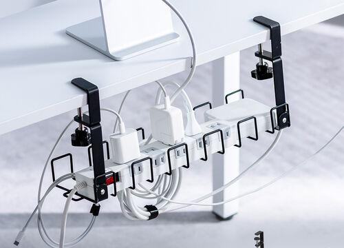
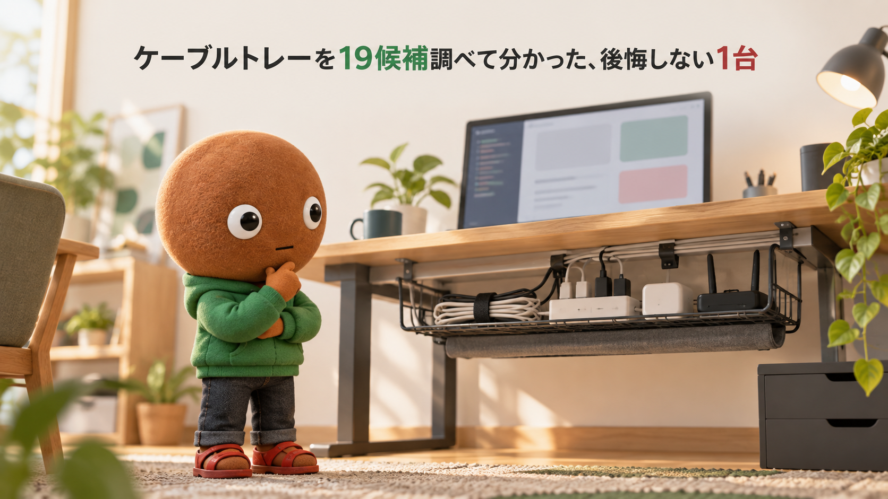
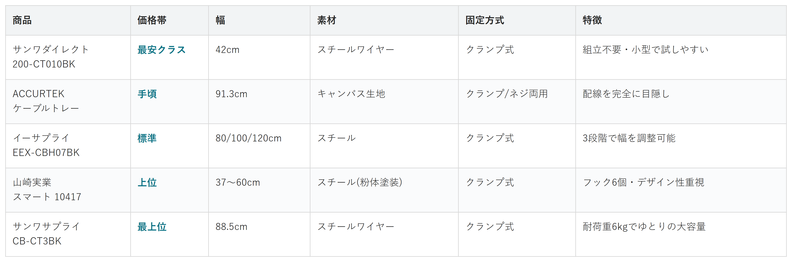

Amazonで見るとにかく安いものを選んだらクランプがデスクの厚みに合わなかった・配線が結局丸見えのままだった、と後悔したくない人へ
そのケーブルトレー、
タイプや価格だけで選んでいませんか？
ワイヤー・キャンバス生地まで、デスク下ケーブルトレー19候補を調査。価格・固定方式・配線の隠し方まで、選び方の違う5商品を比較しました。
自分に合うケーブルトレーを探す
この記事はAmazonアソシエイト・プログラムの参加者として、紹介料を得る場合があります（PR）。仕様は調査時点の情報です。
19候補から、選び方の違う5商品に絞りました。まずは気になる1台へ。向いている人・向いていない人と、低評価レビューもまとめています。
19候補を調査
5商品に厳選
低評価レビューも確認済み
結論から先に言うと：
固定方式・素材・伸縮幅、何を優先するかで1台を。
横にスワイプして、5商品を見比べる
選び方の基準は3つ
調べてわかったのは、基準は3つでした。
1つ目は「固定方式と対応する天板の厚み」。クランプ式が主流ですが、製品ごとに対応する天板厚みの範囲が異なるため、購入前に自分のデスクの厚みを測っておく必要があります。
2つ目は「素材と配線の隠し方」。スチールワイヤーやメッシュは通気性がよく、ルーターなど熱を持つ機器を収納しても安心です。一方でキャンバス生地は、配線を完全に目隠しできる代わりに通気性はやや劣ります。
3つ目は「伸縮幅と耐荷重」。デスクの横幅や、収納したい電源タップ・ルーターの数に合わせて、サイズと耐荷重を選ぶ必要があります。
比較表

価格帯・幅・素材・固定方式・特徴の比較（価格帯は最安クラス〜最上位の5段階）
サンワダイレクト ワイヤーケーブルトレー 200-CT010BK
- 最安クラス
- 幅42cm・スチールワイヤー・クランプ式
- 組立不要で小型、まず試しやすい
ACCURTEK ケーブルトレー キャンバス生地
- 手頃
- 幅91.3cm・キャンバス生地・クランプ/ネジ両用
- 配線を完全に目隠し
イーサプライ ケーブルトレー クランプ式 EEX-CBH07BK
- 標準
- 幅80/100/120cm・スチール・クランプ式
- 3段階で幅を調整できる万能タイプ
山崎実業 伸縮デスク下ケーブルトレー スマート 10417
- 上位
- 幅37〜60cm・スチール(粉体塗装)・クランプ式
- フック6個付き、デザイン性重視
サンワサプライ ケーブル配線トレー CB-CT3BK
- 最上位
- 幅88.5cm・スチールワイヤー・クランプ式
- 耐荷重6kgでゆとりの大容量
向いてる人
- 価格を抑えてまず1台試したい人
- デスク下の小さなスペースに電源タップ1つ分を収めたい人
向いてない人
- 大きめのルーターや複数の電源タップをまとめて収納したい人
選ぶ決め手とにかく安く試したい人は、これを選べば迷いません。
低評価レビューも見ました
今回の検索範囲では、目立った低評価の指摘は見当たりませんでした。組み立て不要でクランプもぐらつかないと、好意的な声が中心でした。
参考：ユーザーブログ・レビューを基にした集約
サンワダイレクト ワイヤーケーブル
トレー 200-CT010BKは、まずケーブル
トレーを試したい人に最も向く1台です。
組み立て不要のワイヤータイプを
クランプで挟むだけで設置できます。
幅42×奥行11.8×高さ18.2cm、
耐荷重2kgのコンパクトサイズです。
向いてる人
- 配線を完全に目隠ししたい人
- インテリアに馴染む見た目を重視したい人
向いてない人
- ルーターなど熱がこもりやすい機器をたくさん収納したい人
選ぶ決め手配線を見た目ごと隠したい人は、これがいちばん向いています。
低評価レビューも見ました
今回の検索範囲では、目立った低評価の指摘は見当たりませんでした。
参考：ユーザーブログ・レビューを基にした集約
ACCURTEK ケーブルトレーは、
配線を完全に目隠ししたい人に
最も向く1台です。
キャンバス生地のバッグ状で、
中の配線が外から一切見えません。
幅91.3cm、クランプ・ネジ止め
両対応、ベルクロ7本付属です。
向いてる人
- デスクの横幅に合わせてサイズを調整したい人
- 複数の電源タップやルーターをまとめて収納したい人
向いてない人
- とにかく安く済ませたい人
選ぶ決め手デスクの幅にぴったり合わせたい人は、これが向いています。
低評価レビューも見ました
今回の検索範囲では、目立った低評価の指摘は見当たりませんでした。
参考：ユーザーブログ・レビューを基にした集約
イーサプライ ケーブルトレー
クランプ式 EEX-CBH07BKは、幅を
合わせたい人に最も向く1台です。
幅80/100/120cmの3段階で
伸縮でき、幅広いデスクに対応。
穴あけ不要のクランプ式、
スチール製で耐荷重5kgです。
向いてる人
- 見た目のデザイン性も重視したい人
- フックでケーブルもまとめて掛けたい人
向いてない人
- とにかく安く済ませたい人
選ぶ決め手見た目も妥協したくない人は、これが心強い1台です。
低評価レビューも見ました
今回の検索範囲では、目立った低評価の指摘は見当たりませんでした。
参考：ユーザーブログ・レビューを基にした集約
山崎実業 伸縮デスク下ケーブル
トレー スマート 10417は、見た目も
重視したい人に最も向く1台です。
マットな質感のスチールトレーに、
フックが6つ付いています。
幅37〜60cmに伸縮、
天板厚5.5cmまで対応します。
向いてる人
- 大型ルーターや複数の電源タップをまとめて余裕を持って収納したい人
向いてない人
- とにかく安く済ませたい人
- 小さなスペースに合わせて使いたい人
選ぶ決め手大きめの機器をまとめて収納したい人は、これが向いています。
低評価レビューも見ました
今回の検索範囲では、目立った低評価の指摘は見当たりませんでした。
参考：ユーザーブログ・レビューを基にした集約
サンワサプライ ケーブル配線
トレー CB-CT3BKは、大きめの機器を
まとめたい人に最も向く1台です。
幅88.5cmのワイヤーLサイズ、
耐荷重6kgとゆとりがあります。
クランプ固定式、
天板厚10〜40mmに対応します。
19候補をどう絞った？ 調査の経緯を見る
ケーブルトレーは、ワイヤーメッシュかスチール板かキャンバス生地か、クランプ式かネジ止め式かなど選択肢が多く、見た目や価格だけで選ぶと、クランプがデスクの厚みに合わなかった・配線が結局丸見えのままだったといったギャップが起きやすいアイテムです。正直どれを選べばいいのか迷います。
なので今回、私がケーブルトレーのスペックを調べ比較しました。各商品ごとに、向いてる人・向いてない人も調べているので、自分に合った1台を探してみてください。
19候補から5つに絞り込みました
ケーブルトレーは、note・タックルノート・サキドリなど複数のメディアで紹介されている定番アイテムです。今回は主要候補19件を調べ、価格帯・素材（ワイヤー/スチール板/キャンバス生地）・固定方式・サイズが重複しないよう5商品に絞りました。
調査したのはIMILLET・山崎実業・サンワダイレクト・Mozawa・PAVSTINE・NODOCA・C-J-W・ACCURTEK・イーサプライ・Plus・JINS&VICO・サンワサプライ・SYUNICON・キングジム・LIFAXIA・WEIDUOYI・RCHYFEEDの各ブランドの候補です。
IMILLETの伸縮ワイヤーケーブルトレーは、サンワダイレクト 200-CT010BKと同じワイヤー・クランプ式で価格帯も近く重複するため見送りました。
Mozawa・PAVSTINE・NODOCA・C-J-Wは、いずれもスチールメッシュ・クランプ式で、イーサプライ・サンワサプライと特徴が重複するため見送りました。
サンワダイレクトのメッシュタイプ200-CT004BKは、同ブランドのワイヤータイプ200-CT010BKとサイズ違いの重複になるため見送りました。
山崎実業の壁掛け収納ラック（5462・5463）は、同じ10417とブランドが重複し、サイズ・耐荷重も近いため見送りました。マグネット式の5463は面白い固定方式でしたが、対応するデスクの材質が限られるため候補から外しました。
Plusのメッシュケーブルトレー、JINS&VICOの伸縮ワイヤータイプは、いずれもサンワダイレクト・イーサプライと素材・固定方式が重複するため見送りました。
サンワダイレクト200-CT001BKは、CB-CT3BKと同ブランド・同素材のワイヤータイプで重複するため見送りました。イーサプライEEX-CBH02も、EEX-CBH07BKと同ブランドで重複するため見送りました。
SYUNICONのケーブルクリップは、配線をまとめて収納する「トレー」ではなくケーブル1本ずつを留める「クリップ」寄りの製品だったため、既存のケーブルオーガナイザー記事の対象と重なると判断し見送りました。
キングジムのルートボード（フック・ガイド・バスケット型）は、トレー型とは特性が異なるユニークな製品でしたが、今回の5商品の枠には収まらないため見送りました。
LIFAXIA・WEIDUOYI・RCHYFEEDは、いずれもパンチングスチール・メッシュ製で、イーサプライ・サンワサプライと素材・固定方式が重複するため見送りました。
なお、デスク下の配線を1本ずつ留める「ケーブルオーガナイザー（クリップ・ホルダー類）」は別記事で紹介済みのため、今回は棚状に配線をまとめて収納する「ケーブルトレー」だけを調査対象にしています。
低評価の商品も見ました
5商品それぞれについて、個別にWebSearchで低評価レビューを確認しました。個別レビュー本文の真偽までは検証できないため、機械的に確認できた範囲の傾向だけを書いています。
今回の5商品はいずれも、今回の検索範囲では目立った低評価はほぼ見当たりませんでした。
調べてみて驚いたこと
「ケーブルトレー」と一口に言っても、ワイヤーメッシュ・スチール板・キャンバス生地と素材がまったく異なり、通気性と配線の目隠し度合いがトレードオフの関係になっていることが分かりました。ルーターなど熱を持つ機器を隠したい場合は通気性のよい金属タイプ、見た目をとにかく整えたい場合は布製タイプという住み分けです。
また、名前が似ている「ケーブルオーガナイザー」との違いも、調べてはじめてはっきりしました。オーガナイザーはケーブル1本1本を留める"留め具"であるのに対し、ケーブルトレーは電源タップやルーターごとデスク下にまとめて収納する"棚"で、役割がまったく違うアイテムだと再認識しました。
迷ったらこれ
ここまで読んでもまだ迷ったら、幅を80/100/120cmの3段階で調整できるイーサプライ ケーブルトレー クランプ式 EEX-CBH07BKが、デスクを選ばず使える万能タイプとして外しにくいです。
Amazonで見る→よくある質問
Q. クランプ式とネジ止め式、どちらを選べばいいですか。
A. デスクを傷つけたくない・賃貸で穴あけできない場合はクランプ式が向いています。しっかり固定してズレなく使いたい場合はネジ止め対応の製品も選択肢に入ります。クランプ式を選ぶ場合は、対応する天板の厚み（多くの製品で0.5〜5.5cm程度）を事前に確認しましょう。
Q. 金属メッシュとキャンバス生地、どちらを選べばいいですか。
A. ルーターなど熱を持ちやすい機器を収納するなら、通気性のよい金属メッシュ・ワイヤータイプが向いています。配線を見た目ごと完全に隠したいなら、キャンバス生地タイプが向いています。
Q. 耐荷重はどのくらい確認すればいいですか。
A. 電源タップ1つ程度なら2kg前後でも十分ですが、ルーターやモデムなど複数の機器をまとめて載せる場合は、5kg以上の耐荷重がある製品を選ぶと安心です。
Q. デスクの幅に対応するサイズが分からない時はどうすればいいですか。
A. 伸縮タイプを選べば、デスクの横幅に合わせて調整できます。固定幅のタイプを選ぶ場合は、デスクの有効幅（脚や配線と干渉しない範囲）を事前に測っておきましょう。
Q. ケーブルクリップ・オーガナイザーとの違いは何ですか。
A. ケーブルクリップやオーガナイザーは、ケーブル1本1本をデスクの縁などに固定する小物です。ケーブルトレーは、電源タップやルーターごとデスク下にまとめて収納する棚状のアイテムで、配線をまとめて隠したい場合に向いています。
こんな記事も書いてます
ミートボーの調査部屋で他の記事も見る（全本）


出典
- note Gadget News「ケーブルトレー おすすめ10選」：note.com
- タックルノート「ケーブルトレーおすすめ12選」：corp.tacklenote.jp
- サキドリ「ケーブルトレーのおすすめ15選」：sakidori.co
- サンワダイレクト公式 200-CT010BK：direct.sanwa.co.jp
- サンワサプライ公式 CB-CT3BK：sanwa.co.jp
- イーサプライ公式 EEX-CBH07BK：esupply.co.jp
- 山崎実業 smart 伸縮デスク下ケーブルトレー：item.rakuten.co.jp
- Amazon.co.jp サンワダイレクト ワイヤーケーブルトレー 200-CT010BK：amazon.co.jp
- Amazon.co.jp ACCURTEK ケーブルトレー キャンバス生地：amazon.co.jp
- Amazon.co.jp イーサプライ ケーブルトレー クランプ式 EEX-CBH07BK：amazon.co.jp
- Amazon.co.jp 山崎実業 伸縮デスク下ケーブルトレー スマート 10417：amazon.co.jp
- Amazon.co.jp サンワサプライ ケーブル配線トレー CB-CT3BK：amazon.co.jp